Meet The Cast
Meet The Palm Characters
Click the palm 🌴 under each card to discover the character behind the story.
```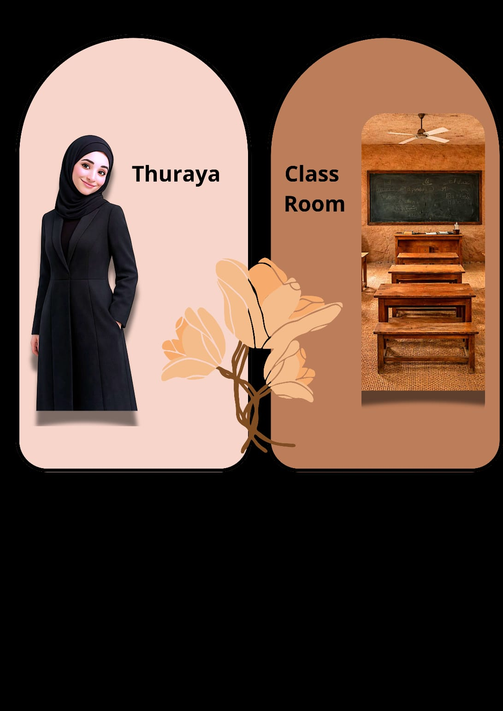
🌴 Thuraya
The Leader of Al-Qurawashiyah
EN
```
The author. The English teacher. The one who let John and Sophia in — without prior warning.
SUPER POWER
One look… and the entire class goes silent 👀
“إذا رأيت أنياب الليث بارزة
فلا تحسبن أن الليث يبتسم”
WEAKNESS
The wall crocodile 🐊
The only creature that makes Thuraya step back.
SECRET
Stretches from 1973… all the way to 2027.
It will be revealed. Eventually.
DREAM
Finish her Master’s in Turkey 🇹🇷
And hint at the Ministry. Diplomatically. As always.
FUNNY FACT
Even Shayb Khalaf lowers his voice when Thuraya is around. 😶
```
🌴
ع
```
قائدة القرواشية التي لا يوقفها شيء.
مؤلفة القصة، معلمة اللغة الإنجليزية، واللي خلّت جون وصوفيا يدخلون العالم… بدون إنذار مسبق.
القوة الخارقة
نظرة واحدة… والصف كله يسكت 👀
نقطة الضعف
تمساح الجدار 🐊
الشيء الوحيد اللي يخليها تتراجع خطوة للخلف.
السر
سرها ممتد من 1973… إلى 2027.
وراح ينكشف في السلسلة الأخيرة.
الحلم
تكمل الماجستير في تركيا 🇹🇷
وتلمّح للوزارة بطريقة دبلوماسية منذ سنوات.
معلومة مضحكة
حتى الشايب خلف يتكلم بهدوء لما ثريا موجودة. 😶
🌴Click Here
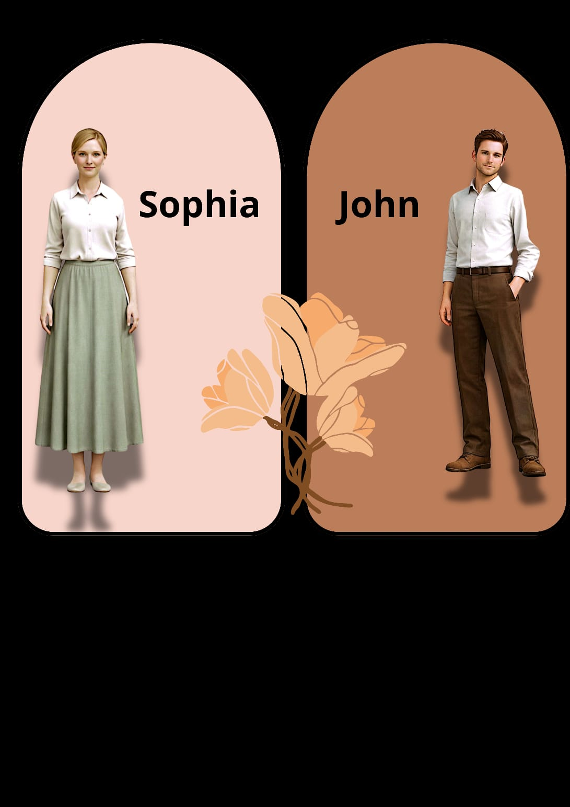
🧑🏫 John + Sophia
The Ones Who Came to Teach… and Got Taught
JOHN
```
Came to teach English. Found surprise, heat, and a goat waiting for him.
Speaks Arabic without permission.
Gets scared. Denies it immediately.
Sometimes he’s sweet. Sometimes he’s absolutely useless 😄
SOPHIA
Arrived as Sophia. Became Safiya.
Nobody argued with her about it.
Organises total chaos with quiet grace.
Her silence is more dangerous than Mansoor’s screaming.
FUNNY FACT
John says: “I am not afraid.”
Then quietly stands behind Sophia. 😄
WEAKNESS — JOHN
Shayb Khalaf. The heat. Malood. 🐐
```
🌴
جون
```
جاء يعلّم الإنجليزية… فاكتشف أن الصدمة بانتظاره.
يتكلم عربي بدون إذن، يخاف، وينكر فوراً.
أحياناً حلو. وأحياناً بايخ جداً 😄
صوفيا
جاءت Sophia وصارت Safiya.
ما ناقشها أحد.
تنظم الفوضى بهدوء.
وصمتها أخطر من صراخ منصور.
معلومة مضحكة
جون يقول: “أنا ما أخاف.”
ثم يختبئ خلف صوفيا. 😄
🌴Click Here
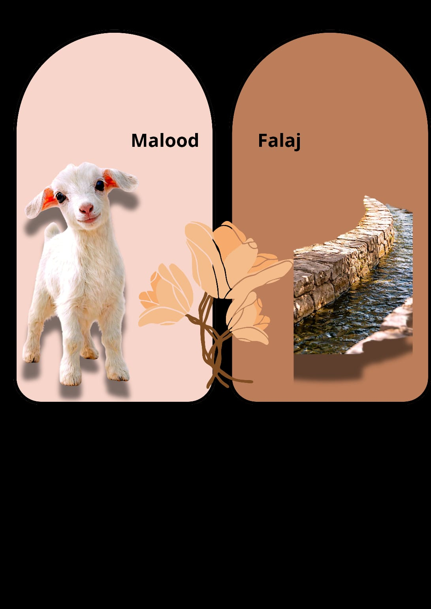
🐐 Malood + The Falaj
The Unofficial School Manager + The Life Line
MALOOD
```
Enters class. Watches everyone. Eats the papers like inspection reports.
Nobody knows where he lives or who raised him.
Appears exactly when the lesson is important. 👁️
FAVOURITE FOOD
Papers. Especially Sophia’s notes. 📄
SECRET
Permanent customer at Sadoo’s shop.
Owes money since before the 1970s. Still hasn’t paid.
THE FALAJ
The life artery of Al-Qurawashiyah.
Like the vein that carries blood — the falaj carries everything:
water, laundry, children, memories, and the occasional flying soap.
FUNNY FACT
The falaj has absorbed more village drama than any therapist ever could. 💧😅
```
🌴
مالود
```
يدخل الصف، يراقب الكل، ويأكل الأوراق وكأنه يراجع التقارير.
محد يعرف وين يعيش أو من حيّاه.
يظهر بالضبط لما تكون الحصة مهمة. 👁️
أكلته المفضلة
الأوراق. وخاصة ملاحظات صوفيا. 📄
السر
زبون دائم عند سادو.
وعليه ديون… من قبل وجايحة السبعين. ولسا ما دفع.
الفلج
شريان حياة القرواشية.
يحمل الماء والغسيل والأطفال والذكريات وسائل الجلي.
تعبان من كثر ما يطيح فيه قون، ويسبح فيه أطفال، ويتغسل فيه البيك أب.
معلومة مضحكة
الفلج شرب قصص القرية كلها… وراح ينشرها في أرجاء القرواشية. 💧😅
🌴Click Here
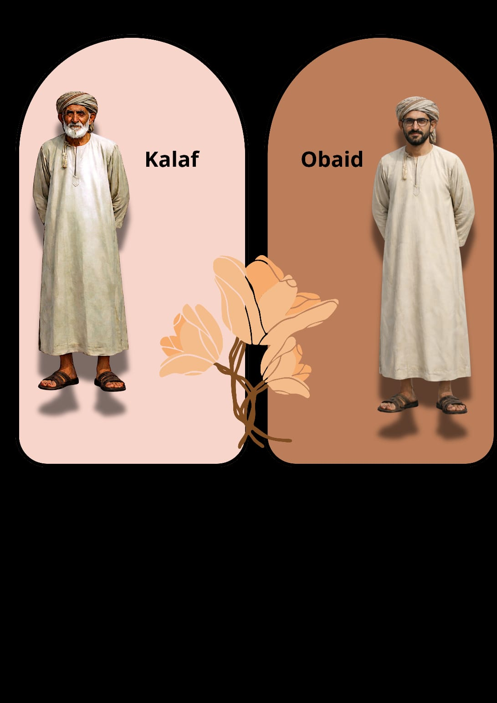
🌿 Shayb Khalaf + Obaid
The Man Who Knows What Others Don't
SHAYB KHALAF
```
Quiet. Mysterious. Looks at you like he already knows what you’ll say.
Specialist in herbs, healing, and things science hasn’t named yet.
Gives you the feeling he has knowledge from another world entirely.
FAMOUS FOR
فتّاك. الحروز من الشر محروز.
OBAID
Returned from Bahrain. Brought knowledge nobody expected.
Calm, respectful, wise.
When Obaid starts talking — even the noisy ones remember they have ears.
FUNNY FACT
Nobody messes with Khalaf. Except Malood.
Malood doesn’t understand the concept of “mysterious.” 🐐
```
🌴
الشيب خلف
```
هادئ، غامض، ينظر إليك وكأنه يعرف ما ستقوله قبل لا تفتح فمك.
متخصص في الأعشاب والطب والأشياء اللي العلم ما سمّاها بعد.
يعطيك إحساس إنه يعرف علوم العالم الآخر. 🌿
مشهور بـ
فتّاك. الحروز من الشر محروز.
عبيد
راجع من البحرين وجاب علوم ما توقعها أحد.
هادئ، حكيم، محترم.
لما يبدأ يتكلم، حتى المزعجين يتذكرون إن عندهم آذان.
معلومة مضحكة
محد يعبث بالشيب خلف. إلا مالود.
مالود ما يفهم مفهوم “غامض.” 🐐
🌴Click Here
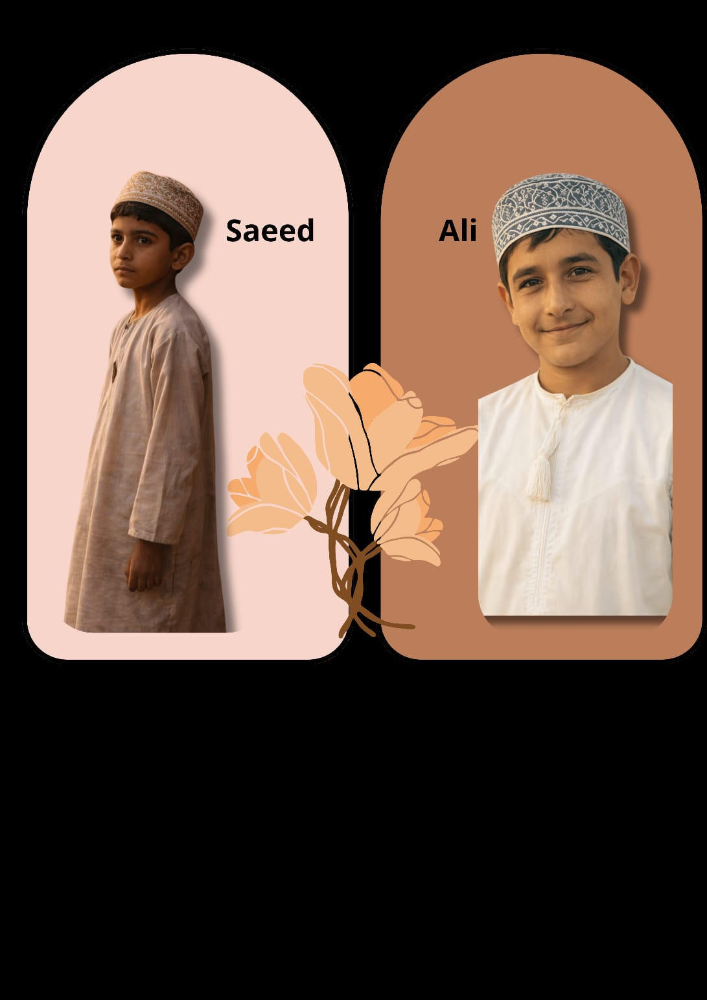
👁️ Saeed + Ali
The Watcher + The Artist
SAEED
```
Watches more than he speaks.
Shy, quiet, processes everything in silence.
Then suddenly — one brilliant answer that shocks the entire class.
Nobody saw it coming. Including Saeed himself.
ALI
The quiet artist.
Sees things others don’t notice.
Notices the dust on the board before the chalk does. 🎨
Slightly in his own world. Totally fine with that.
FUNNY FACT
Ali once drew a portrait of Malood during maths.
It was honestly very accurate. 🐐🎨
```
🌴
سعيد
```
يراقب أكثر مما يتكلم.
هادئ، خجول، يعالج كل شي بصمت.
ثم فجأة… إجابة ذكية تصدم الصف كامل.
محد توقعها. ولا هو نفسه.
علي
الفنان الهادئ.
يشوف تفاصيل ما يشوفها غيره.
يلاحظ غبار السبورة قبل الطبشورة. 🎨
شوية في خياله. وراضٍ تماماً عن ذلك.
معلومة مضحكة
علي رسم بورتريه لمالود في حصة الرياضيات.
وكانت دقيقة جداً بصراحة. 🐐🎨
🌴Click Here
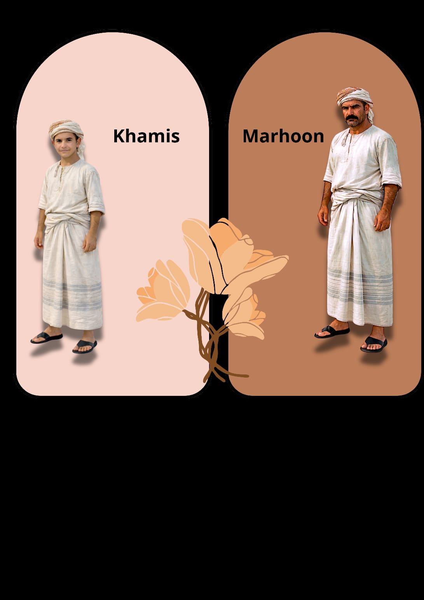
🌱 Marhoon + Khamis
The Farmer + His Son Who Has Other Plans
MARHOON
```
Born farming. Lives farming. Will probably be buried farming.
Knows the soil, the palms, the water, and the weather better than he knows people.
That man in the overalls? That’s Marhoon. Always.
LIFE PHILOSOPHY
“A man’s purpose is to work the land.”
No debates. No exceptions. Final answer. 🌾
KHAMIS — his son
Genius. Silent. Understands before you finish the question.
Watches everyone. Hates noise.
The only person Mansoor is afraid might be smarter than him. 👀
FUNNY FACT
If Marhoon talks for more than two minutes…
it is still about farming. 🌱
```
🌴
مرهون
```
ولد يزرع. يعيش يزرع. ومحتمل يُدفن وهو يزرع.
يعرف التربة والنخيل والماء والطقس أكثر مما يعرف الناس.
اللي لابس الوزرة؟ ذاك مرهون. دايماً. 🌾
فلسفة الحياة
“دور الإنسان إنه يعمّر الأرض.”
ما في نقاش. ما في استثناء. جواب نهائي.
خميس — ابنه
عبقري. صامت. يفهم قبل لا تنتهي السؤال.
يراقب الجميع. يكره الضوضاء.
الشخص الوحيد اللي منصور يخاف إنه أذكى منه. 👀
معلومة مضحكة
إذا مرهون تكلم أكثر من دقيقتين…
ما زال يتكلم عن الزراعة. 🌱
🌴Click Here
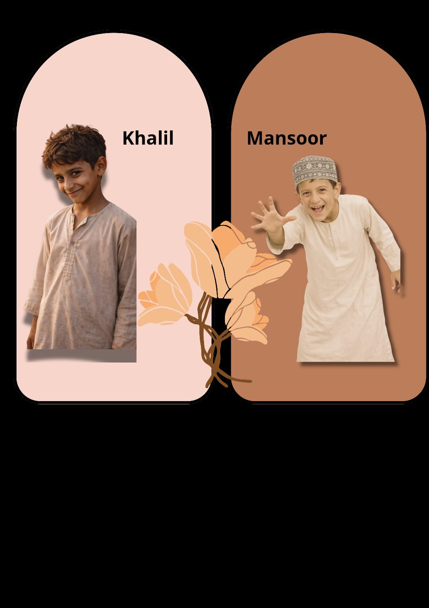
😄 Khalil + Mansoor
The Laughing Machine + The Human Storm
KHALIL
```
The official laughter machine of the village.
Laughs at good jokes, bad jokes, and jokes that haven’t started yet.
If nobody laughs — Khalil handles the entire village shift. 😄
Never does homework. Escapes always. Laughs at wrong moments.
Has never once been serious. Not even once.
MANSOOR
Human storm. Runs without reason. Talks without stopping.
Laughs before the joke ends. He and Khalil? Naturally.
Starts the lesson active. Ends it more active.
If he screams too much — he freezes. Turns into a statue. Temporarily. 🌪️
FUNNY FACT
They once got so loud… Thuraya’s look silenced the entire district. Not just the class.
```
🌴
خليل
```
آلة الضحك الرسمية للقرية.
يضحك على النكتة الحلوة، البايخة، والنكتة اللي ما بدأت بعد. 😄
ما يحل الواجب. يهرب دائماً. يضحك في اللحظات الخطأ.
ما كان جاد في حياته ولا لحظة واحدة.
منصور
إعصار بشري. يركض بدون سبب. ما يوقف كلامه.
يضحك قبل النكتة تنتهي. هو وخليل طبعاً. 🌪️
يبدأ الحصة نشيط وينهيها أكثر نشاطاً.
إذا زعق كثير… يتحول لتمثال. مؤقتاً.
معلومة مضحكة
مرة صخبوا لدرجة إن نظرة ثريا سكّتت الحي كامل. مو بس الصف.
🌴Click Here
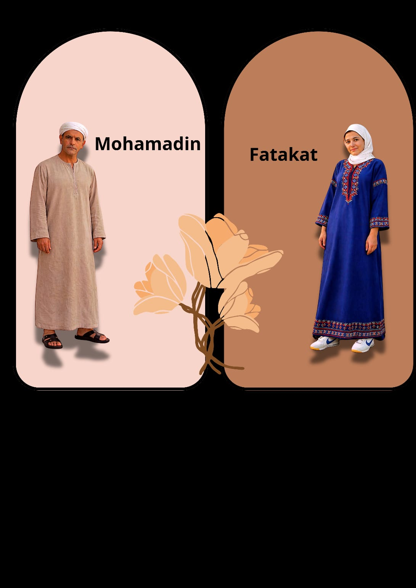
📣 Fatakat + Mohamadin
The Egyptian Energy + Mathematics With a Face
FATAKAT
```
Movement. Speed. Egyptian energy that arrived and never left.
Her voice woke up the entire village.
The rooster heard her on day one and immediately retired. 📣
Warm and kind — but her voice makes students freeze on the spot.
MOHAMADIN
Mathematics. With a face.
One glance from across the yard is enough to organise the classroom.
Students learn from fear. Information enters their heads whether they want it or not.
FUNNY FACT
Her voice arrives to the classroom before she does.
He arrives to the classroom and the noise had already left. 😄
```
🌴
فتكات
```
الحركة والسرعة والطاقة المصرية اللي وصلت وما رجعت. 📣
صوتها أيقظ القرية كاملة.
الديك سمعها اليوم الأول وقرر التقاعد فوراً.
طيبة وحنونة… لكن صوتها يخلي الطلاب يهدعون مكانهم.
محمدين
الرياضيات على هيئة إنسان.
نظرة واحدة من بعيد تكفي لترتيب الصف.
الطلاب يتعلمون من الخوف. المعلومة تدخل رأسهم غصباً عنهم.
معلومة مضحكة
صوتها يوصل الصف قبلها.
وهو يوصل والضوضاء راحت من قبله. 😄
🌴Click Here
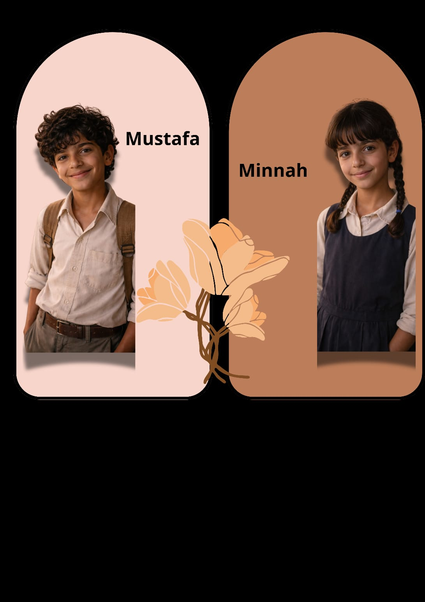
🌸 Mustafa + Minnah
Small Roles. Unforgettable Presence.
MUSTAFA + MINNAH
```
They belong to the lighter side of the village world.
Quiet presence. Small details. Side moments that stay in memory.
Not every character needs a loud entrance.
Some just walk in softly… and somehow you never forget them.
FUNNY FACT
Nobody can explain exactly why they’re so memorable.
They just are. 🌸
```
🌴
مصطفى ومنة
```
من الشخصيات اللي تضيف خفة لعالم القرية.
حضور هادئ، تفاصيل صغيرة، ولمسات تبقى في الذاكرة.
مو كل شخصية تحتاج مدخل صاخب.
بعضهم يمشي بهدوء… وبطريقة ما، ما تنساهم.
معلومة مضحكة
محد يقدر يفسر ليش يتذكرهم.
بس يتذكرهم. 🌸
🌴Click Here

🛒 Sadoo + Zahran
The Unofficial Hero + The Unforgettable Extra
SADOO
```
Tailor. Seller. Cook. Fixer. Palm worker. Still available somehow.
Opens 5 jobs at the same time and closes none of them properly.
FAVOURITE SENTENCE
“فكر هو ما في معلوم أنا… سادو يعرف كل شي منيه! 😄”
No drama. No fuss. Just Sadoo.
ZAHRAN
Poor man. A little confused. A very simple role.
But I wanted to mention him. And immortalise his memory.
He ran away once. Nobody believed him. 😄
FUNNY FACT
Nobody knows if Sadoo owns the shop…
or the shop owns Sadoo. 🛒
```
🌴
سادو
```
خياط. بياع. طباخ. مصلّح. يخرّف النخيل. ولا زال متوفر.
يفتح 5 وظائف بنفس الوقت وما يقفل أي منهم صح.
جملته المفضلة
“فكر هو ما في معلوم أنا… سادو يعرف كل شي منيه! 😄”
ما في جرجر. ما في كثير كلام. فقط سادو.
زهران
مسكين. شوية مخرّف. دور بسيييط.
بس حبيت أذكره وأخلّد ذكراه في أحد أقواس الذاكرة. 😄
هرب مرة. محد صدّقه.
معلومة مضحكة
لا أحد يعرف هل سادو صاحب الدكان…
أم الدكان صاحب سادو. 🛒
🌴Click Here
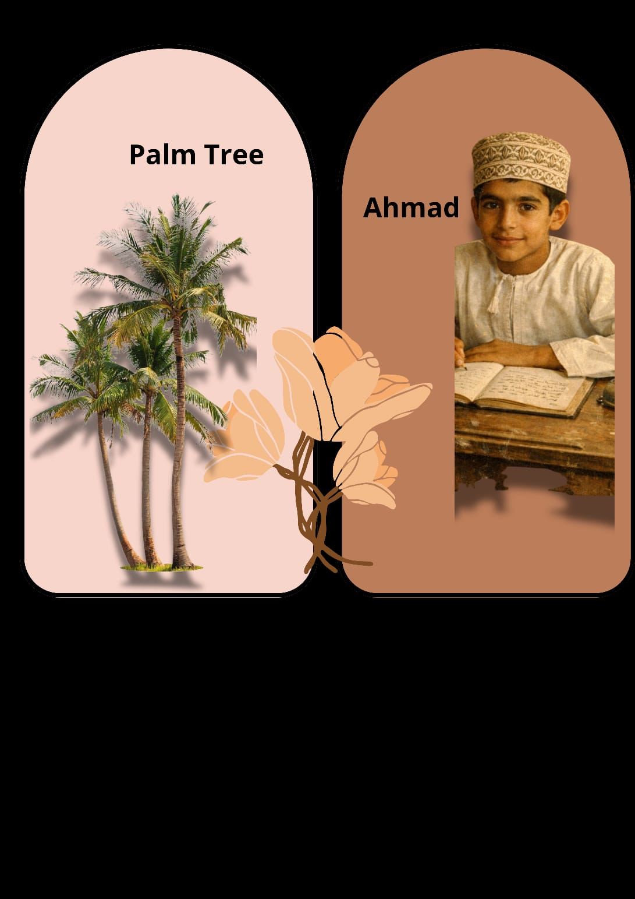
🌴 نخلة الفرض + Ahmad
The Queen of the Village + The Silent Soldier
نخلة الفرض — THE PALM
```
The queen. The hero. The foundation of everything.
She never drops her dates without a reason.
Gives you shade, wood, leaves, honey, a mat, fresh air, dates, unripe dates, palm fronds, weavings…
Omanis love her so much that if she falls — they leave her where she lands.
They don’t move her. She has earned her rest.
THE PALM IS THE WHOLE STORY
Without her, there is no title.
Without her, there is no school.
Without her, there is no shade for the lesson.
AHMAD
The silent soldier. Neat handwriting. Precise. Balanced.
Even his smile looks organised.
Loves learning. Raises his hand. Never causes chaos. Ever.
FUNNY FACT
Ahmad once corrected Khalil’s joke.
Grammatically. 📝😄
```
🌴
نخلة الفرض
```
الملكة. البطلة. أساس كل شيء.
ما تحط رطبها إلا بسبب.
تعطيك ظل، خشب، سعف، عسل، بساط، سح، رطب، بسر، خوص، سعفيات…
العمانيين يحبونها لدرجة إن إذا طاحت يخلّونها مكانها. ما يشيلونها. استاهلت ترتاح.
النخلة هي القصة كلها
بدونها ما في عنوان.
بدونها ما في مدرسة.
بدونها ما في ظل للحصة.
أحمد
الجندي الصامت. خط مرتب. دقيق. متزن.
حتى ابتسامته مرتبة.
يحب التعلم. يرفع يده. ما يسوي فوضى. أبداً.
معلومة مضحكة
أحمد صحّح نكتة خليل مرة.
نحوياً. 📝😄
🌴Click Here
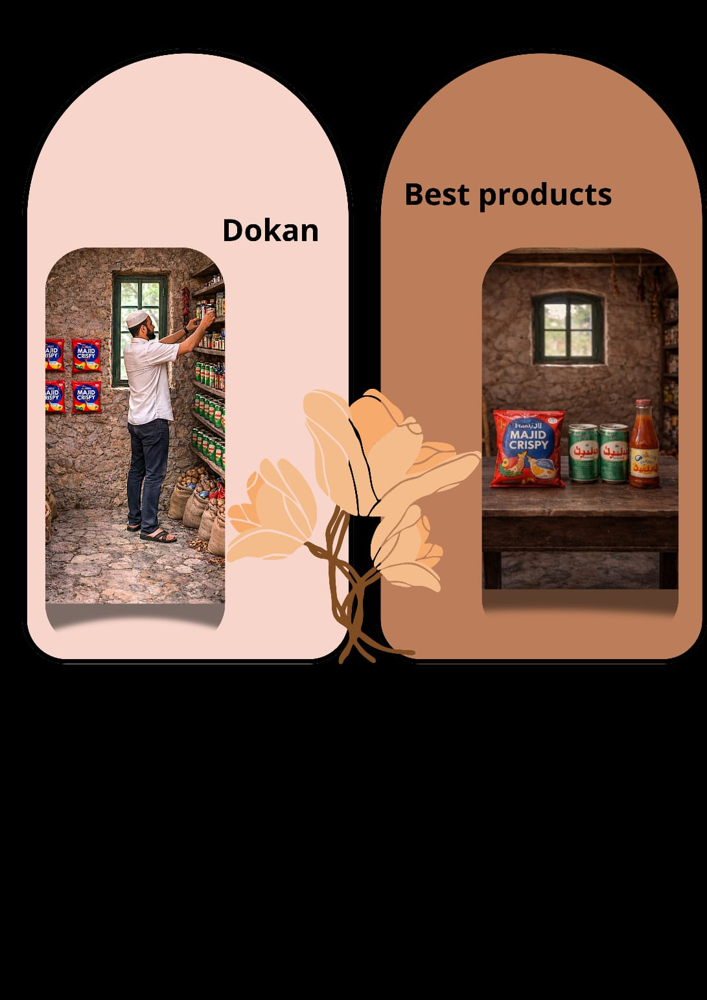
🛒 دكان سادو
The Official Supermarket of Al-Qurawashiyah
THE SHOP
```
If you need something — it’s there.
If you don’t need something — it’s also there.
International. World class. Mashallah.
MALOOD’S FAVOURITE PLACE
He goes there even when he doesn’t need anything.
Especially then. 🐐
THE RULE
The better the gathering becomes…
the faster everyone somehow ends up at the dokan.
Nobody planned it. It just happens.
FUNNY FACT
Sadoo’s shop has never run out of anything.
Except answers about the debt list. 😄
```
🌴
الدكان
```
السوبرماركت الرسمي المعتمد للقرواشية.
إذا تحتاج شيء — موجود.
إذا ما تحتاج شيء — موجود أيضاً.
عالمي. ما شاء الله.
المكان المفضل لمالود
يروح حتى لو ما يحتاج شيء.
خصوصاً وقتها. 🐐
القاعدة
كلما زانت الجلسة…
فجأة الجميع ينتهي عند الدكان.
محد خطط. يصير بس.
معلومة مضحكة
دكان سادو ما نفد منه شيء في يوم.
إلا الأجوبة عن قائمة الديون. 😄
🌴Click Here
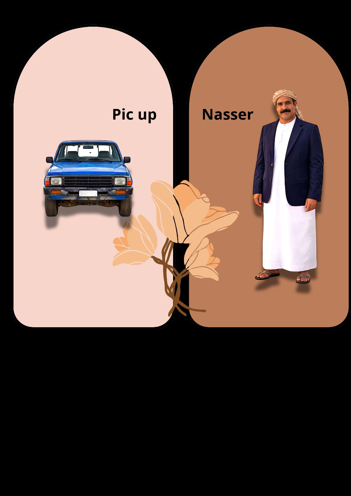
🚐 ناصر + البيك أب
The Village Driver + The Moving Legend
NASSER
```
Village driver. Unofficial navigator.
Knows roads, shortcuts, stories, and how to keep going when the road disappears.
FAMOUS CHANT
“يا سايقنا… دوس دوس
الله يبعث لك عروس”
Most prayed-for wish in the village. Still pending. 🚐
THE PICKUP
Part taxi. Part legend. Part moving memory.
Has carried: teachers, students, Malood, produce, laundry, news, and probably a few secrets.
FUNNY FACT
Nasser drives even when the road is still thinking about existing.
The pickup doesn’t ask. It just goes. 😄
```
🌴
ناصر
```
سائق القرية. نافيجيتورها غير الرسمي.
يعرف الطرق والاختصارات والقصص وكيف يكمل حتى لو الطريق اختفى.
الأنشودة المشهورة
“يا سايقنا… دوس دوس
الله يبعث لك عروس”
أكثر دعوة دعيوا له بها في القرية. ولا زالت معلقة. 🚐
البيك أب
نصف تاكسي. نصف أسطورة. نصف ذاكرة متحركة.
حمل: المعلمين، الطلاب، مالود، المحاصيل، الغسيل، الأخبار، وربما بعض الأسرار.
معلومة مضحكة
ناصر يسوق حتى لو الطريق ما قرر يظهر للحياة بعد.
البيك أب ما يسأل. يمشي بس. 😄
🌴Click Here
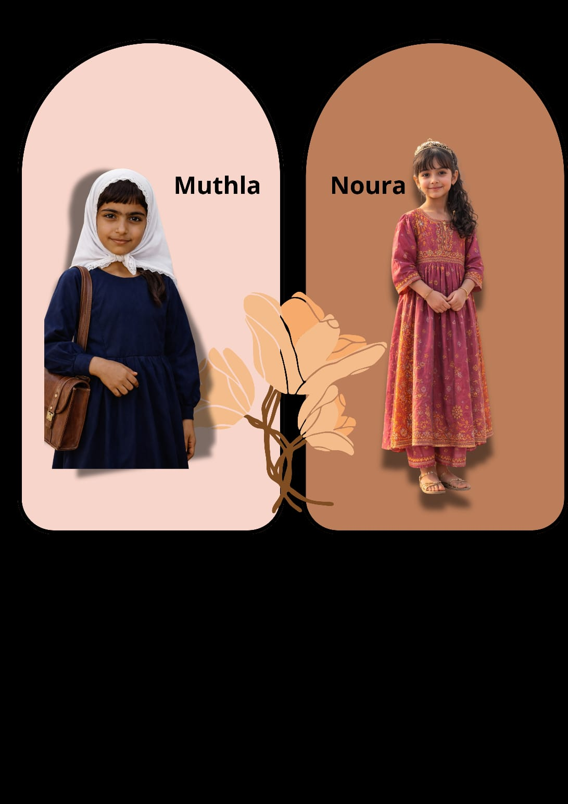
🙋 Noura + Muthla
The Question Machine + The Quiet One
NOURA
```
Fast. Curious. Always ready with another question.
Chaotic thinker. Learns at speed.
Raises her hand before the thought fully arrives.
Then figures out the answer while already standing. 😄
Never stops. Ever. Has she considered it? No.
MUTHLA
Gentle. Shy. Neat. Calm.
Listens. Helps others. Lives in her own world.
Doesn’t cause problems. Doesn’t need to.
FUNNY FACT
Noura once asked three questions before the lesson started.
Thuraya counted them. Smiled. Said nothing. 👀
```
🌴
نورة
```
سريعة. فضولية. جاهزة دائماً بسؤال جديد.
تفكيرها فوضوي. تتعلم بسرعة.
ترفع يدها قبل الفكرة توصل كاملة.
ثم تفكر في الجواب وهي واقفة. 😄
ما تسكت. أبداً. فكرت بذلك؟ لا.
مثله
لطيفة. خجولة. مرتبة. هادئة.
تسمع. تساعد الآخرين. عايشة في حالها.
ما تسوي مشاكل. ما تحتاج.
معلومة مضحكة
نورة سألت ثلاث أسئلة قبل ما تبدأ الحصة.
ثريا عدّتهم. ابتسمت. وما قالت شيء. 👀
🌴Click Here